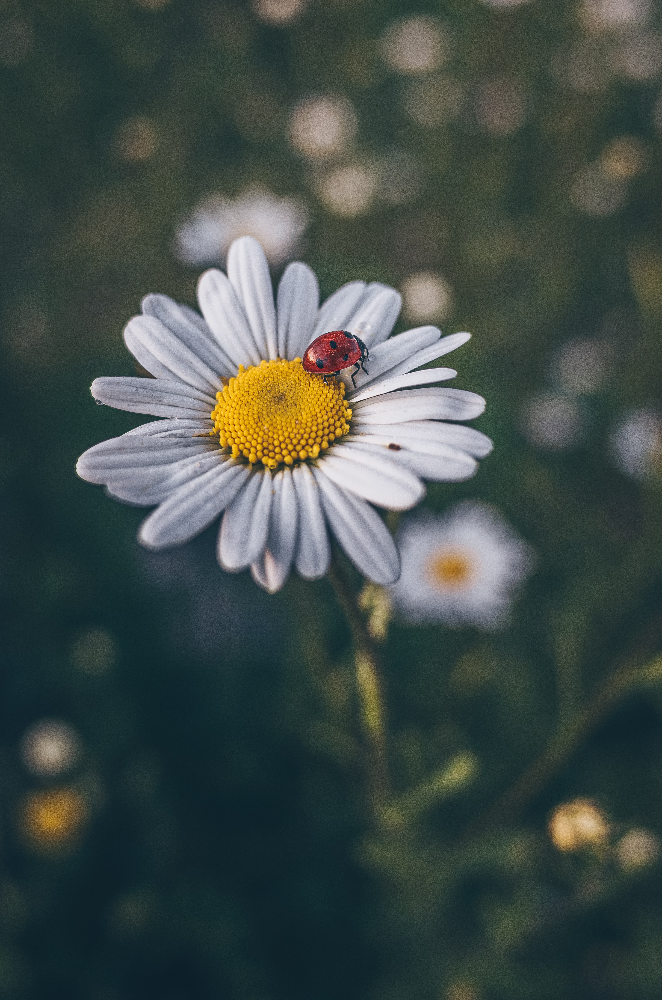

 Sun flower is the special kind of flower whic will glow when sunlight falls on it
1. Sunflower is a yellow-coloured annual flower that is a native of North America.
2. The growth of Sunflower needs sunlight for 6-8 hours per day.
3. Sunflower always faces in the direction of the sun.
4. Sunflower has yellow coloured petals and green sepals.
5. The stem of the sunflower is thick and is of green colour.
6. Sunflowers are grown to extract cooking oil from these and the seeds of sunflowers are also edible.
7. Sunflower is also used in cosmetic products such as lip balm and creams etc thus enhancing beauty.
8. Sunflowers are also found in red and purple colour and their height can vary.
9. Sunflower blossom direction moves from east to west in accordance with the sun.
10. Sunflower oil is also known for its anti-inflammatory effect and also helps to reduce cholesterol.
Some | Few Lines on Sunflower in English for Kids
1. The flower of this plant is very beautiful and attractive and its scientific name is Helianthus annuus.
2. It is a very famous flower in work and it comes in many colours like white, brown, yellow etc.
3. There are about 70 species of this flower which are different in colour and shape.
4. Generally, its flower is yellow in colour and its length is up to 12 feet.
5. Sunflower plant is used in Ayurveda and Its flowers, leaves, and stems are used in making medicines.
6. Sunflower is the national flower of Ukraine and Russia.
7. Its name is sunflower because it keeps tilting towards the sun.
8. This flower is grown in many countries like Russia, America, Britain, Egypt, Denmark, and India.
9. Linoleic acid, oleic acid and palmitic acid are found in sunflower oil and oil also contains high amounts of vitamins E, A and D.
10. sunflowers are glimpsed as symbols of good luck and are linked with truth, loyalty, and honesty.
Sunflowers are useful plants with large flower heads, or blooms. They are named for the way they turn their blooms from east to west to follow the Sun. Sunflowers were first grown in North and South America. Today they are also grown in other parts of the world, including Europe and Asia.
contact: Contact details| SL No. | Name | Collge | Semester |
| 1 | Puneet | reva university | 6th sem |
| 2 | Puneet | reva university | 6th sem |
| 3 | Puneet | reva university | 6th sem |